Fragmented presence
Individual windows make it harder to understand how people relate to one another in the room.
Product designer / UI & UX
Selected portfolio
Virtual Huddle — an AI-enabled hybrid collaboration experience
Hybrid meetings often flatten a physical room into a single video feed. Whiteboards, product demonstrations, and spontaneous gestures become difficult for remote participants to see and follow.
Virtual Huddle connects an ultra-wide camera, AI processing, and a gesture-driven workspace so teams can move naturally between conversation, presentation, brainstorming, and product demonstration.
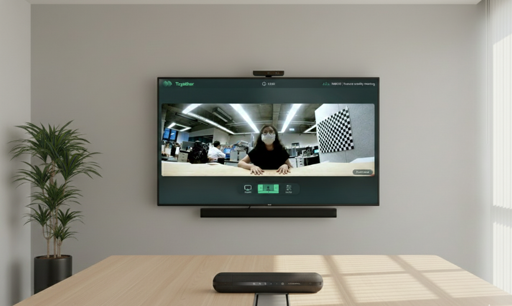
Hybrid meetings separated physical collaboration from remote participation, making spatial interactions, whiteboards, and physical demonstrations difficult to experience across locations.
We reframed hybrid collaboration around spatial behavior, designing an adaptive experience that connects physical movement, shared content, and remote participants within one workspace.
We translated four collaboration scenarios into a gesture-driven interface that connects ultra-wide video, adaptive views, and shared content—turning physical meeting behaviors into a cohesive digital experience.
An ultra-wide view preserves spatial context instead of reducing the room to a single angle.
Overview, brainstorming, presentation, and product demo shape the experience.
Content and participants remain together as the interface changes state.
The useful parts of a huddle happen beyond the camera frame.
Small meeting rooms are made for fast, informal collaboration. But conventional video calls privilege individual windows and one camera angle. When people sketch on a side wall, point to an object, or shift the conversation to a presentation, remote teammates lose context and momentum.
Individual windows make it harder to understand how people relate to one another in the room.
Whiteboard sketches and Post-it iterations can remain inaccessible to remote participants.
Changing cameras, sharing files, and reframing content adds friction during live demonstrations.
Don’t fit the room into a call.
Make the room the interface.
The opportunity was not another video layout, but a spatial system that understands where collaboration is happening.
We mapped the room around the behaviours that drive real meetings. Each scenario requires a different visual focus, while preserving the shared context between local and remote participants.
Frame the group as a collective, preserving spatial unity and natural interaction.
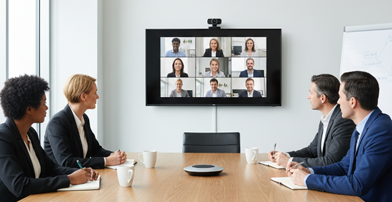
Bring left and right walls into view so sketches and Post-it discussions become a shared record.
Keep the speaker beside the material, maintaining the energy of an in-room presentation.
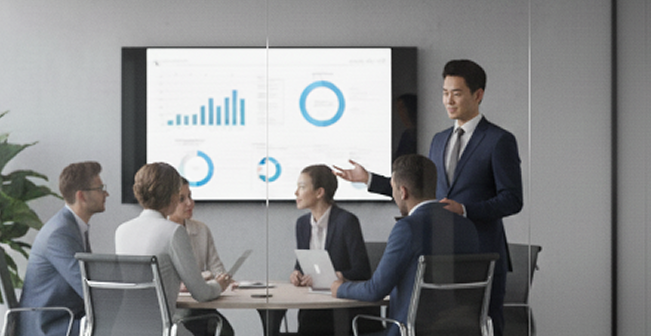
Focus on hands, objects, and nuanced detail without losing the wider meeting context.
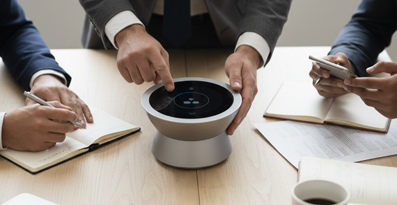
Analyses the meeting dynamics within Huddle Spaces, categorized into four distinct typologies that address core video conferencing needs of business professionals. By integrating spatial layout with human behaviour, we created a new operational model for video software. Using new technologies, the system, hardware and software, is designed to evolve towards an AI ecosystem.
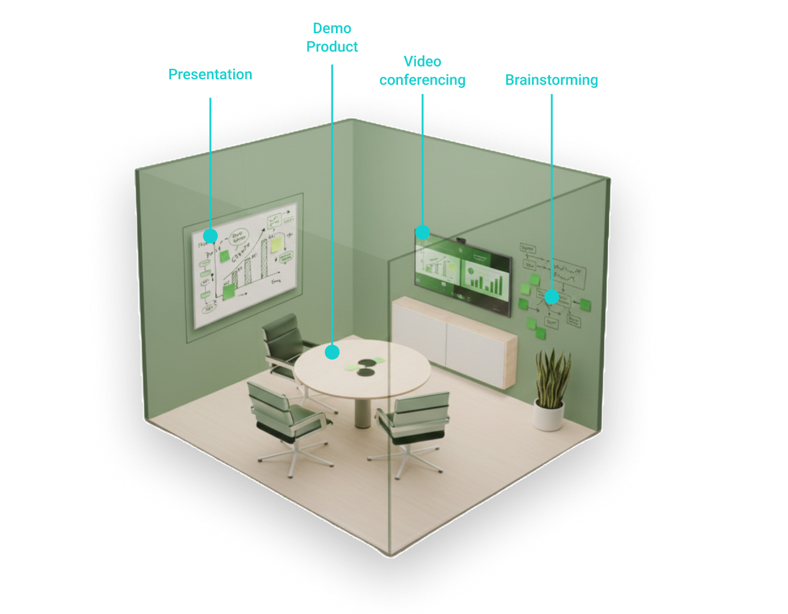
Virtual Huddle integrates physical hardware and backend processing into one legible experience. The system captures the room, interprets people and movement, then composes the appropriate view for the shared display.
To create a professional meeting experience, Virtual Huddle integrates a powerful software-hardware ecosystem. Combining advanced technologies with wide-angle optics, the system ensures every physical interaction is captured clearly while maintaining a distraction-free digital environment for remote participants.
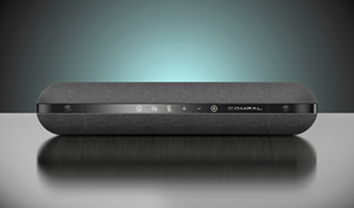
Capturing the entirety of the collaborative space through high-fidelity 180° panoramic optics.
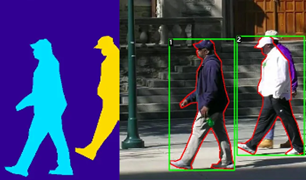
Uses advanced computer vision to provide professional privacy and distraction-free collaboration.
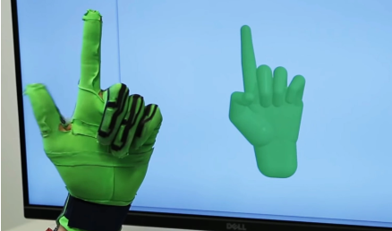
Links physical intent and digital action through proactive gesture recognition.
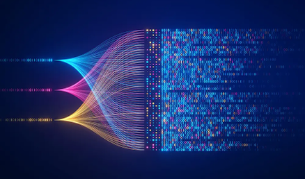
Underlying engine for image enhancement and content digitisation.
Integrates physical hardware with backend technology to demonstrate how a 180-degree video solution moves from backend processing to frontend UI presentation. Process involves understanding how human behaviour works with technology to create a natural UX.
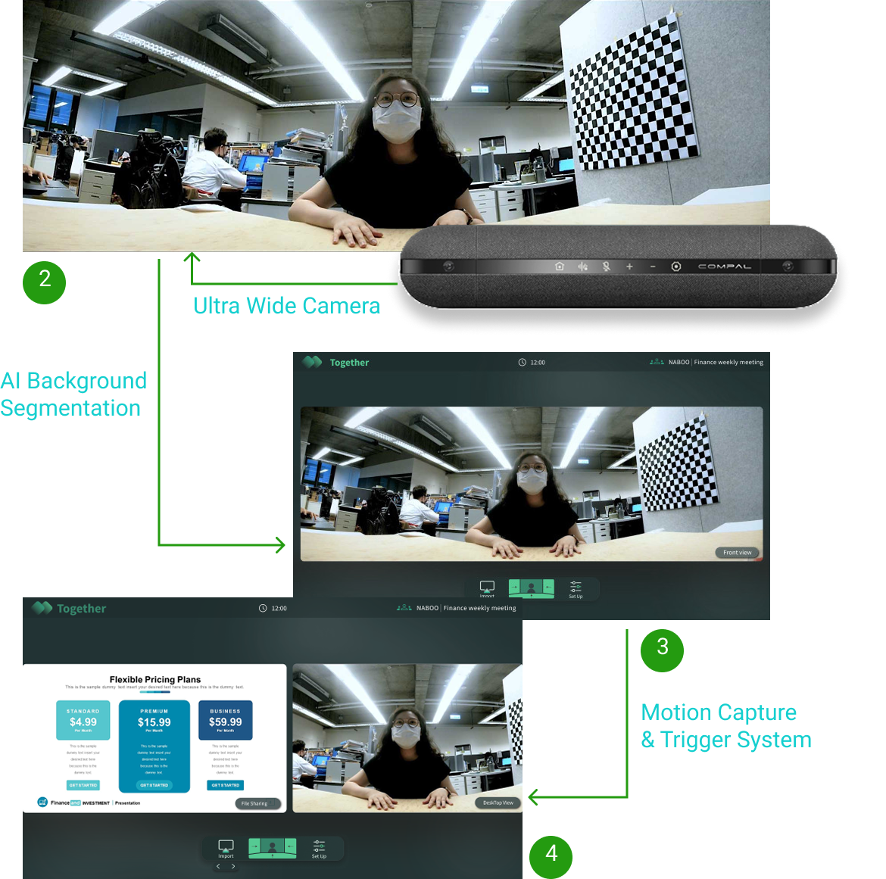
A gesture-driven interface lets participants direct the camera and meeting rhythm through natural body movements. Each recognised gesture maps to a specific state change, making system behaviour predictable.
Shift focus from the default view to a left or right brainstorming wall.
Bring slides or documents forward while keeping participants in context.
Move into a close product view for hands-on demonstrations.
The final UI uses a high-contrast, minimal language designed for large displays. Compact controls behave like digital stickers, while the shared work and human interaction remain visually dominant.
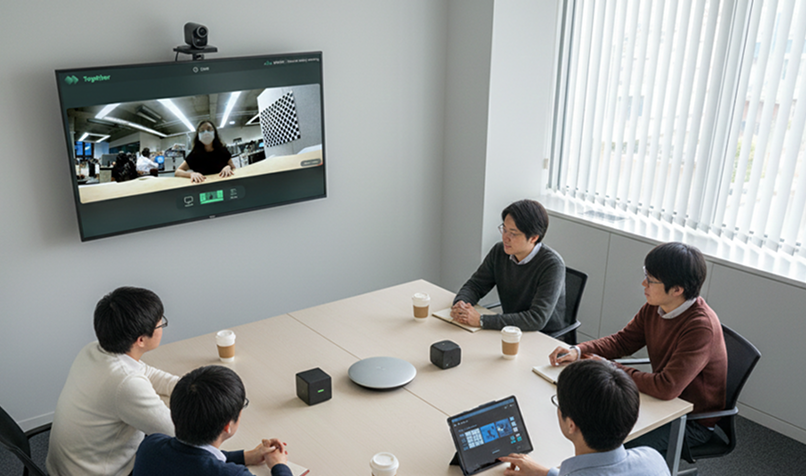
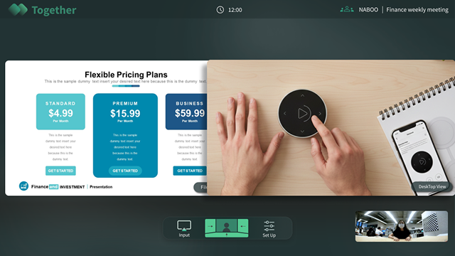